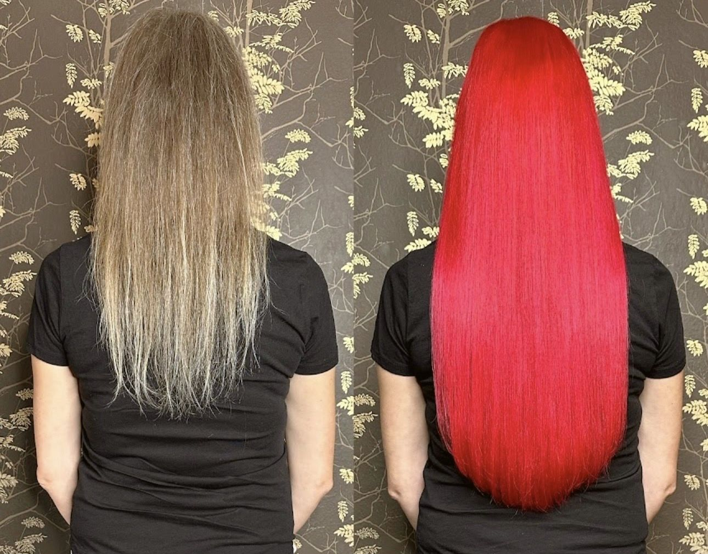
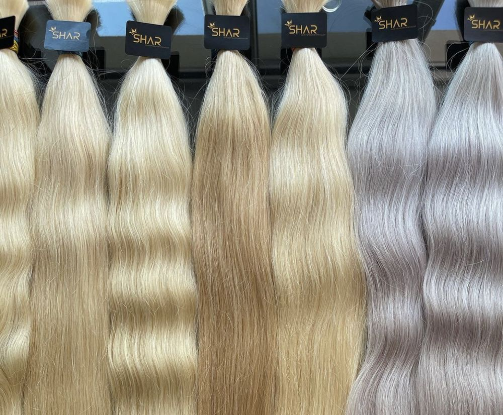
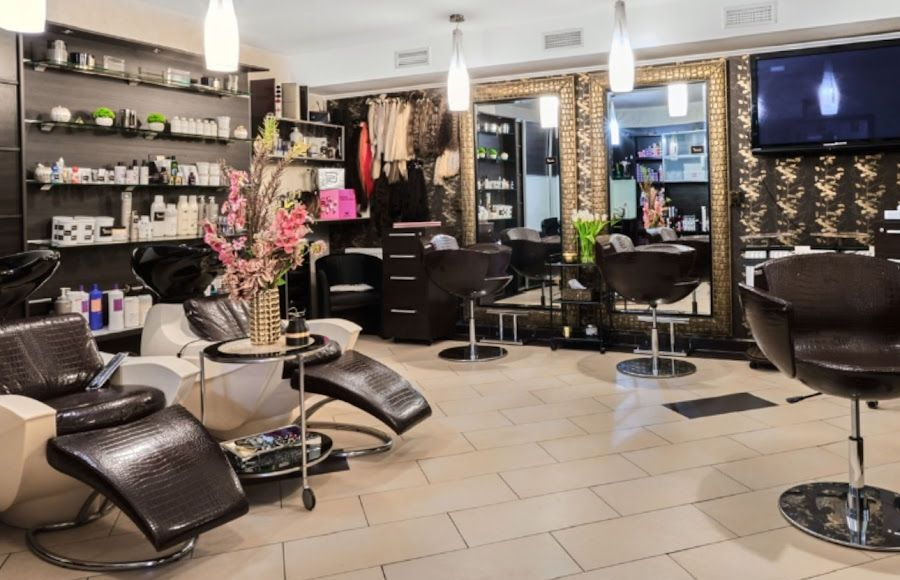

Před a po

„Vlasy vypadají naprosto přirozeně, jsou krásně husté a práce byla provedena pečlivě a profesionálně.“
Rozalie
Rozalie vám všechno vysvětlí a vybere prodloužení, které sedne vašim vlasům. Poradí, jak o ně pečovat, aby vydržely co nejdéle. S dotazem se jí můžete ozvat i později.
„Róza mi doslova vytrhla trn z paty na poslední chvíli den před mým měsíčním odjezdem […] Vstřícný, profesionální a především lidský přístup.“

Objednání
Pracujeme na objednávku. Zavolejte na 606 136 090 a domluvíme termín.

„Příjemné a útulné prostředí, milý přístup a navíc jsme si i hezky pokecali.“
Nádvorní 1166/17
460 06 Liberec
460 06 Liberec
Bezbariérový vstup i toaleta, bezbariérové parkování.